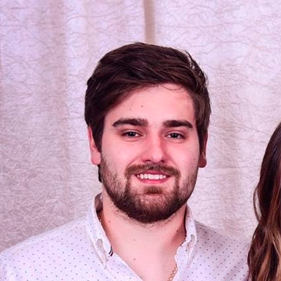

<section>
    <div class="container-img">
        
    </div>
    <div class="container-text">
        <h1>
            Sou Lucas, um design engineer dedicado a criar experiências significativas.
            No domínio onde a tecnologia e a estética convergem, uso o código e o design como ferramentas para dar vida
            ao
            intangível.
        </h1>
    </div>
    <div class="container-projects">
        <ul>
            <li>
                <span>Projeto appschons</span>
                <p>Feito com css html e angular</p>
            </li>
            <li>
                <span>Projeto appschons</span>
                <p>Feito com css html e angular</p>
            </li>
        </ul>
    </div>
</section>
